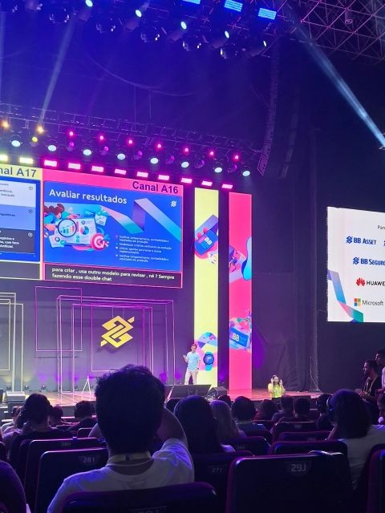
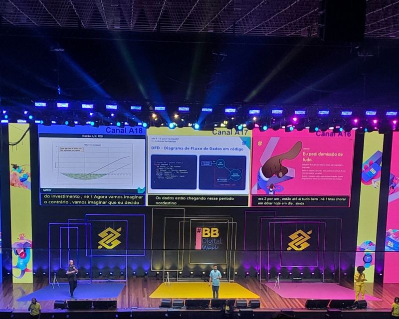

Sobre mim
Olá! Meu nome é Henrique Silva Viana, tenho 19 anos e sou natural de Brasília. Curso Análise e Desenvolvimento de Sistemas na UDF e trabalho como aprendiz de infraestrutura interna na Servix.
Tenho forte interesse por redes de computadores, segurança e automação. No dia a dia, apoio a equipe em serviços de rede e segurança com Active Directory, Google Admin, Microsoft Azure e Palo Alto, além do suporte prático a servidores on-premises e cabeamento estruturado, sempre acompanhado de analistas seniores.
- Faculdade: UDF - Centro Universitário do Distrito Federal
- Curso: ADS - 2º semestre
- Cidade: Brasília - DF
- Trabalho: Aprendiz de Infraestrutura na Servix
README.md
Estudando atualmente
Ferramentas de trabalho
Objetivos para este ano
- Publicar meu primeiro site no GitHub Pages
- Tirar a certificação Cisco CCST Networking
- Aprofundar em endereçamento IP (IPv4 e IPv6) e roteamento
- Automatizar tarefas do dia a dia com Python e PowerShell
- Tirar a certificação Microsoft Azure Fundamentals (AZ-900)
Estudando Redes
No trabalho percebi que redes de computadores são essenciais para a equipe, então comecei a estudar redes cabeadas. Estes são os temas que já vi:
Fundamentos
Modelos OSI e TCP/IP e como os dados são encapsulados em cada camada.
Comutação
Switches, tabela MAC e os tipos de comunicação: unicast, multicast, broadcast e anycast.
Segmentação
VLANs para separar setores da rede, com mais organização e segurança.
Redundância
Loops na camada 2 e como o Spanning Tree Protocol (STP) evita que derrubem a rede.
Trajetória
Minha experiência profissional.
Aprendiz de Infraestrutura Interna — Servix
Help Desk, gestão de usuários e acessos (AD, Azure e Google Admin), onboarding de novos colaboradores, servidores e segurança com Cortex XDR. Ver detalhes →
Eventos
Eventos de tecnologia que participei. Clique nas fotos para ampliar.
BB Digital Week
Uma imersão no futuro da tecnologia! Acompanhei palestras sobre Inteligência Artificial, storage e segurança digital, e vi na prática como essas ferramentas já estão transformando os negócios e o mercado financeiro.
Também aproveitei os estandes com dinâmicas interativas, que renderam um ótimo networking com parceiros de TI. Foi muito bom sair da rotina, trocar ideias e me inspirar com as tendências da nossa área.

